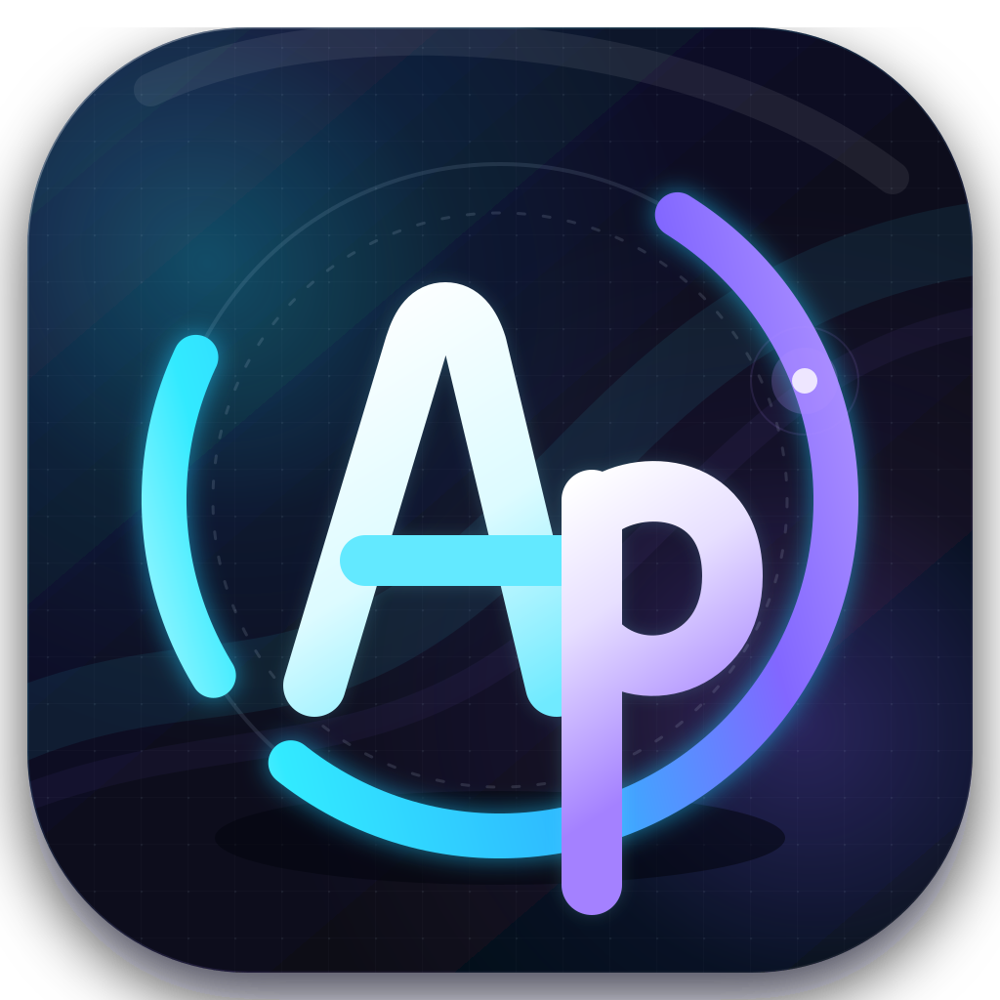

Master wordmark01 / Wake geometry
AutoPi
Wordmark study 02 · Vector / 1710 × 430
AutoPi wordmark
几何
字标
AutoPi 是原生 Pi 核心之外的 Wake Runtime：字标中 o 是一枚带 Wake 珠点的断口环轨，对应 Outer Loop 的后台并行等待与一次触发；P 的竖笔越过基线向下延伸，呼应图标中穿出外环的长尾；i 的圆点是 Wake 节点，代表 timer、file 或 process 条件满足后回到同一会话的一次唤醒。
预览场景

深色背景 · #090D20
亮色背景 · 反色适配
单色 · 冰白
尺寸辨识度
240 PX
120 PX
64 PX
核心色谱
深空底色
#090D20电光青
#31E8FF核心紫
#8A67FF冰白高光
#F4FBFF